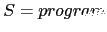

Sig: Práctica: Analizador de PL0 Sup: Análisis Descendente mediante Parsing Ant: Eliminación de la Recursividad Con:
Una gramática y un PEG con las mismas reglas no definen el mismo lenguaje. Véase este ejemplo:
[~/srcPLgrado/pegjs/examples(master)]$ cat grammarvspeg.coffee
#!/usr/bin/env coffee
PEG = require 'pegjs'
coffee = require 'pegjs-coffee-plugin'
grammar = """
a = b 'c'
b = 'b' / 'b' 'a'
"""
parser = PEG.buildParser grammar, plugins: [coffee]
r = parser.parse "bc"
console.log("r = #{r}")
r = parser.parse "bac"
console.log("r = #{r}")
[~/srcPLgrado/pegjs/examples(master)]$ coffee grammarvspeg.coffee
r = b,c
SyntaxError: Expected "c" but "a" found.
Obsérvese que la correspondiente gramática genera el lenguaje:
{ 'bc', 'bac' }
Mientras que el PEG acepta el lenguaje 'bc'.
The dangling else is a problem in computer programming in which an
optional else clause in an If–then(–else) statement results in nested
conditionals being ambiguous.
Formally, the reference context-free grammar of the language is ambiguous, meaning there is more than one correct parse tree.
In many programming languages one may write conditionally executed code in two forms:
the if-then form, and the if-then-else form – the
else
clause is optional:
if a then s
if a then s1 else s2
This gives rise to an ambiguity in interpretation when there are nested
statements, specifically whenever an if-then form appears as s1
in an if-then-else form:
if a then if b then s else s2
In this example, s is unambiguously executed when a is
true and b is true, but one may interpret s2
as being executed when a is false
else to the first if) or when
a is true
and b is false (thus attaching the else to the
second if).
if a then (if b then s) else s2or
if a then (if b then s else s2)
This is a problem that often comes up in compiler construction, especially scannerless parsing.
The convention when dealing with
the dangling else is to attach the else to the nearby
if statement.
Programming languages like Pascal and C follow this
convention, so there is no ambiguity in the semantics of the language,
though the use of a parser generator may lead to ambiguous grammars.
In
these cases
alternative grouping is accomplished by explicit blocks,
such as begin...end in Pascal and {...} in C.
Here follows a solution in PEG.js:
$ cat danglingelse.pegjs
/*
S ← 'if' C 'then' S 'else' S / 'if' C 'then' S
*/
S = if C:C then S1:S else S2:S { return [ 'ifthenelse', C, S1, S2 ]; }
/ if C:C then S:S { return [ 'ifthen', C, S]; }
/ O { return 'O'; }
_ = ' '*
C = _'c'_ { return 'c'; }
O = _'o'_ { return 'o'; }
else = _'else'_
if = _'if'_
then = _'then'_
$ cat use_danglingelse.js
var PEG = require("./danglingelse.js");
var r = PEG.parse("if c then if c then o else o");
console.log(r);
$ ../bin/pegjs danglingelse.pegjs $ node use_danglingelse.js [ 'ifthen', 'c', [ 'ifthenelse', 'c', 'O', 'O' ] ]
[~/srcPLgrado/pegjs/examples(master)]$ pwd -P /Users/casiano/local/src/javascript/PLgrado/pegjs/examples
[~/srcPLgrado/pegjs/examples(master)]$ git remote -v dmajda https://github.com/dmajda/pegjs.git (fetch) dmajda https://github.com/dmajda/pegjs.git (push) origin git@github.com:crguezl/pegjs.git (fetch) origin git@github.com:crguezl/pegjs.git (push)
Si invertimos el orden de las alternativas:
[~/srcPLgrado/pegjs/examples(master)]$ cat danglingelse2.pegjs
/*
S ← 'if' C 'then' S 'else' S / 'if' C 'then' S
*/
S = if C:C then S:S { return [ 'ifthen', C, S]; }
/ if C:C then S1:S else S2:S { return [ 'ifthenelse', C, S1, S2 ]; }
/ O { return 'O'; }
_ = ' '*
C = _'c'_ { return 'c'; }
O = _'o'_ { return 'o'; }
else = _'else'_
if = _'if'_
then = _'then'_
el lenguaje reconocido cambia (vease el ejemplo
en la sección
4.8.1):
[~/srcPLgrado/pegjs/examples(master)]$ pegjs danglingelse2.pegjs
[~/srcPLgrado/pegjs/examples(master)]$ cat use_danglingelse2.js
var PEG = require("./danglingelse2.js");
var r = PEG.parse("if c then if c then o else o");
console.log(JSON.stringify(r));
[~/srcPLgrado/pegjs/examples(master)]$ node use_danglingelse2.js
/Users/casiano/local/src/javascript/PLgrado/pegjs/examples/danglingelse2.js:513
throw peg$buildException(null, peg$maxFailExpected, peg$maxFailPos);
^
SyntaxError: Expected " " or end of input but "e" found.
(* which can (* nest *) like this *)
[~/srcPLgrado/pegjs/examples(master)]$ cat pascal_comments.pegjs
/* Pascal nested comments */
P = prog:N+ { return prog; }
N = chars:$(!Begin .)+ { return chars;}
/ C
C = Begin chars:$T* End { return "C: "+chars; }
T = C
/ (!Begin !End char:.) { return char;}
Begin = '(*'
End = '*)'
$ cat use_pascal_comments.js
var PEG = require("./pascal_comments.js");
var r = PEG.parse(
"not bla bla (* pascal (* nested *) comment *)"+
" pum pum (* another comment *)");
console.log(r);
$ ../bin/pegjs pascal_comments.pegjs $ node use_pascal_comments.js [ 'not bla bla ', ' pascal nested comment ', ' pum pum ', ' another comment ' ]
[~/srcPLgrado/pegjs/examples(master)]$ pwd -P /Users/casiano/local/src/javascript/PLgrado/pegjs/examples
[~/srcPLgrado/pegjs/examples(master)]$ git remote -v dmajda https://github.com/dmajda/pegjs.git (fetch) dmajda https://github.com/dmajda/pegjs.git (push) origin git@github.com:crguezl/pegjs.git (fetch) origin git@github.com:crguezl/pegjs.git (push)
El lenguaje  no puede ser expresado mediante una gramática independiente del contexto.
[~/srcPLgrado/pegjs/examples(master)]$ cat anbncn.pegjs
/*
The following parsing expression grammar describes the classic
non-context-free language :
{ a^nb^nc^n / n >= 1 }
*/
S = &(A 'c') 'a'+ B:B !. { return B; }
A = 'a' A:A? 'b' { if (A) { return A+1; } else return 1; }
B = 'b' B:B? 'c' { if (B) { return B+1; } else return 1; }
Este ejemplo puede ser obtenido desde GitHub:
[~/Dropbox/src/javascript/PLgrado/pegjs/examples(master)]$ git remote -v dmajda https://github.com/dmajda/pegjs.git (fetch) dmajda https://github.com/dmajda/pegjs.git (push) origin git@github.com:crguezl/pegjs.git (fetch) origin git@github.com:crguezl/pegjs.git (push)
Veamos un ejemplo de uso:
[~/srcPLgrado/pegjs/examples(master)]$ cat use_anbncn.js
#!/usr/bin/env node
var PEG = require("./anbncn.js");
if (process.argv.length > 2) {
try {
var r = PEG.parse(process.argv[2]);
console.log("ok "+JSON.stringify(r));
}
catch (e) {
console.log("Grr...."+e);
}
process.exit(0);
}
var inputs = ["aabbcc",
"aabbc", // error
"aaabbbccc",
"aaaabbbccc" // not accepted
];
for(var i = 0; i < inputs.length; i++) {
var input = inputs[i];
try {
var r = PEG.parse(input);
console.log("ok "+JSON.stringify(r));
}
catch (e) {
console.log("Grr...."+e);
}
}
Ejecución:
[~/srcPLgrado/pegjs/examples(master)]$ node use_anbncn.js ok 2 Grr....SyntaxError: Expected "c" but end of input found. ok 3 Grr....SyntaxError: Expected undefined but "a" found.